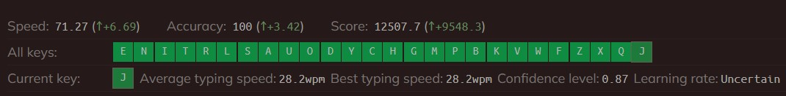

Gautam Patil | September 2022
Do you know that being able to type faster makes you more productive? In fact, it'll save you 21 days every year just by typing faster!

These days we use computers for everything. From entertainment to consuming content, working, etc. We spend hours each day typing on our keyboards and because of that, improving typing speed is one of the most impactful things one can do to level up their digital productivity.
If you work on a computer daily, your typing speed is a factor in how productive you are every day. If you can increase your typing speed by just 10% from 50 WPM to 55 WPM this will in theory allow you to produce more code if you're a programmer, articles if you're a writer, spend less time answering emails if you're an entrepreneur, and get more work done if you're an administrative assistant.
Training your fingers and hands improves both your writing and editing skills- which makes it one of the best methods of improving your communication skills. Additionally, working on eliminating past mistakes from your training regimen reduces the time it takes you to complete each training session. Anyone can improve their typing speed by focusing on the right training methods and habits!.
Typing faster will also make you more efficient because it forces you to focus on what you are doing at hand instead of worrying about how long it will take for something to load or fill out a form.
What Is Touch Typing?
Touch typing describes a style of typing without having to see the keyboard you type on. It boils down to finger placement and muscle memory. The typist begins by placing their fingers on the middle horizontal row of keys on a keyboard, also known as the home row.
From this position, they can effectively sense where other keys will be in relation to this placement. Building muscle memory through practice and repetition is the key to developing the awareness or sense of where the keys are.
Advantages of typing fast:
-
Saves Time:
Typing is something most of us will have to do a lot in our jobs. Whether you work in an office or not, you will probably have to type on a computer keyboard on a weekly or even daily basis.
-
Be More Productive:
Everyone is looking for ways to be more productive both in the workplace and at home, and typing faster is a simple way to get more done in less time. Improve Your Focus
-
Creative Thinking:
Another benefit of learning to type faster is that you will not have to look at the keyboard and think about where your fingers are going. Once you are typing fast, you will be able to look directly at the screen, and your fingers will type without you even thinking about the movements.
Resources for improving typing speed:
1. Take a typing test at Typeracer.com by entering a typing race, you will get to know your current typing speed. It will help you track your progress.
The F key and the J key have small bumps on the keyboard because that's where your index fingers are supposed to sit when typing. Following proper finger placement is important.
3. Once You are familiar with the finger placement, you should type all the letters from the alphabet, to build basic muscle memory, You should try typing A-Z at least 50 times to progress further. Once you've completed typing A-Z, start typing the quote: “The quick brown fox jumps over the lazy dog.” over and over, This sentence is a pangram containing all the alphabet from the English language.
4. Now you should visit keybr.com to build your muscle memory, The website will train your fingers and make you remember all the alphabets, and remember to have proper finger placement on your keyboard.
It will be frustrating at first but with consistency, you will make it forward.
Once you've made all keys green, You are eligible to move forward. Now, open your browser in incognito mode, and log onto keybr.com again! But this time you will not look at the keyboard. This is called touch-typing: Typing without looking at your keyboard but at the screen is called tough typing. It will make you a better typist. You can also reset your keybr.com account to make this happen.

5. Now visit typerace.com again to track your progress. I think you'll be much faster than where you'd start. Increasing your typing performance is not a one-day game, It will take time and a lot of patience. But consistency is the key, be consistent and you will make it 100wpm one day.
6. Proper typing posture entails: Keeping your feet flat on the ground and your neck and back straight Adjusting your elbows to an angle between 90 and 110 degrees Rule of thumb: 80% is technique, 10% is accuracy, 10% is speed. Position your body to the “H” key. Hold your elbows at the sides. Keeping your wrists in a neutral stance Moving your monitor so that the top of your screen is at eye-level Adding appropriate ergonomic typing accessories
Some sites I recommend checking out: